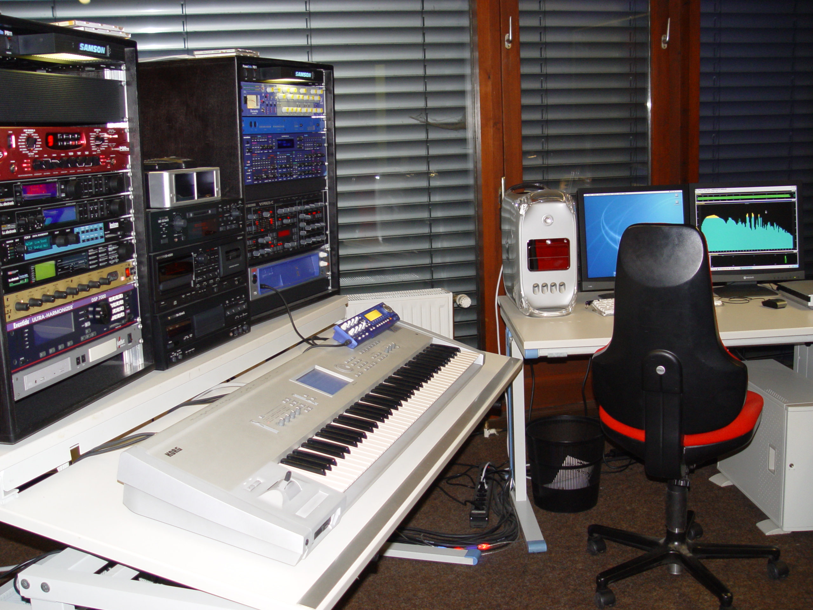

Projekte
In den vergangenen Jahren war ich in verschiedenen Projekten tätig, die meine Fähigkeiten in den Bereichen Medien, Design, Technologie und Kundenbetreuung umfassend gefordert und erweitert haben. Meine Arbeit umfasste:
- Medien und Kreativität: Mitarbeit in einem Tonstudio, Gestaltung und Umsetzung von Webdesign-Projekten sowie Engagement bei einem TV-Sender.
- Technologie und App-Entwicklung: Tätigkeit in einem Streaming-Dienst, insbesondere in den Bereichen App-Entwicklung, Design und Qualitätssicherung.
- Erneuerbare Energien und E-Commerce: Derzeit bin ich bei einem Photovoltaik-Projekt aktiv, das einen eigenen Online-Shop betreibt. Hier übernehme ich Aufgaben im Webdesign, in der Erstellung von Printmedien sowie in der Kundenberatung. Zudem bin ich an der Planung und Umsetzung von Photovoltaikanlagen beteiligt.
Diese vielseitigen Tätigkeiten haben es mir ermöglicht, umfassende Kenntnisse und Erfahrungen in technischen, kreativen und kundenorientierten Bereichen zu sammeln.
Tonstudio "MKS-Media"

Im Jahre 2001 habe ich ein eigenes Tonstudio gegründet und bis 2006 betrieben. Ich habe mich auf die Suche nach Abenteuer begeben, hatte unheimlich viel erlebt in dieser Zeit, viele Freundschaften geschlossen, sehr viel Erfahrungen in der Musik- und Medienwelt gesammelt. In dieser Zeit habe ich 18 Bands Produziert.